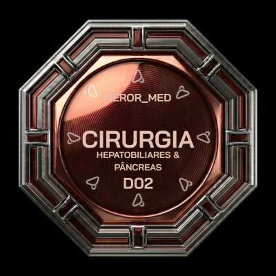

nexor_
MED
CIRURGIA GERAL · D02
← Domínios

Hepatobiliar e Pâncreas
CIRURGIA GERAL · D02 · NEXOR MED
FractalFlashcards
48 cards · 4 camadas cognitivas
F1 · F2 · F3 · F4
FractalQuiz
2 quizzes · 50 questões cada
EASY · STANDARD · HARD
Selecionar Quiz
Hepatobiliar e Pâncreas
SALVO
01
Quiz 001
50 questões · FractalQuiz
SALVO
02
Quiz 002
50 questões · Zero repeat
← Voltar
FRENTE
Toque para revelar
← Anterior
Virar
Próximo →
← Menu
🔊
🔊
🔊
Próxima →
Sair do Quiz
RESULTADO · D02
EASY
0%
STANDARD
0%
HARD
0%
Refazer
Outro Quiz
Menu
← Domínios